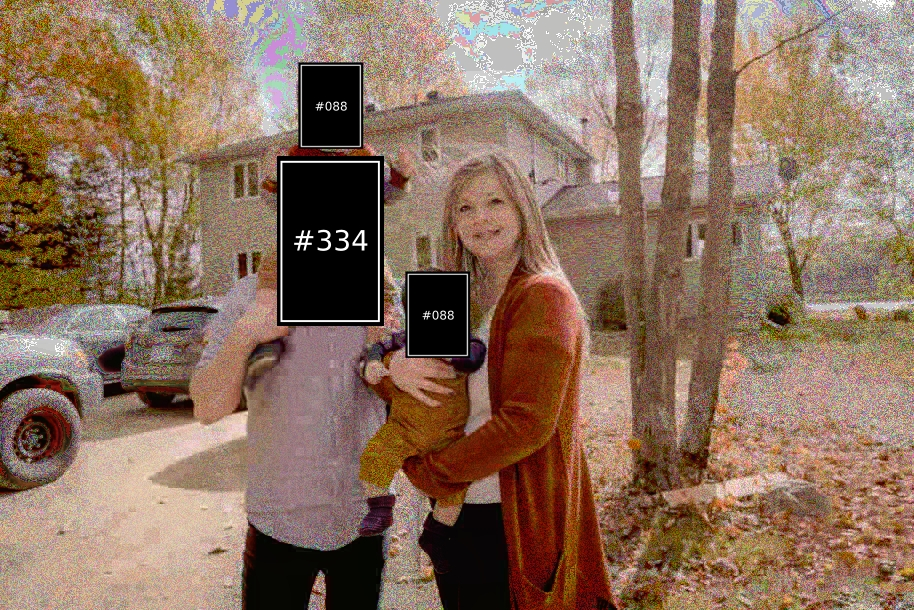
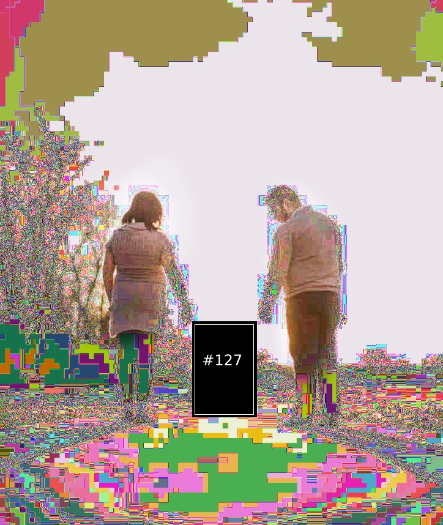

Update del -10²/¤1‘¹23/0012³’²03
Buenas! Alguien sigue leyendo este blog? Jaja...
Ya paso bastante tiempo desde que nos mudamos, nuestras hijas siguieron creciendo, es mas, Kelly hasta tiene su propio blog. Le encanta hablar sobre gatos, asi que les interesa ya saben. Visitenlo!
Update del 1239/0991/91283
Por fin nos mudamos! Hace mucho que estuvmos planeando esto y se nota en nuestras caras, estabamos muy felices :)
La camarografa fue [#127], sus fotos son geniales!
Update del 23/4019/931
𝟶̷̵̢̟̻͚͔͍̔̓͐͛̈́̽𝟷̷̴̢͍͚̫̪̼̈́̔̚͝͝͠𝟶̷̵͕̝̻̻̞͕͐͆͆͐̒̚𝟶̷̴͖̞̠͎̘̒͐̕͜͝͝𝟶̷̸̡͎͉͙͉͖͑̒͒̚͘𝟷̷̸̡̼̦̝̪͔͑͋͊̈́͛𝟶̷̸̢̢͚͓̺͌͒͛͝͝𝟷̷̸̡̠̘̫͇͕̓͆̈́̒ 𝟶̷̸̪͚̺͇͉̪̽̈́̔͌̕͝𝟷̷̵̢͎̞̫̝̈́̓̐͑̽͝𝟶̷̵̢̢̙͙̟͒͊͋͋̚͝𝟷̷̵̼̝͚̙̠̝͋͒͆͆̈́͠𝟶̷̵͖̪̠̫͙͉̿͌͒͋́͝𝟶̷̴͚͉̪̙͖͆̐̒̓͑͒͜𝟷̷̵͖̦͙͇̙̦͋̀̔͆̕͝𝟷̷̴̡͉͓͕͚̪͆͆͆̿͝ 𝟶̷̴̫̻̦͖̪̙̀̿͐͑͘͝𝟷̷̴̢͎̘͕̙͖̔͌̐̓̾𝟶̷̵͔̻͙̠̦͐̾̿͒͆̕͜𝟷̷̵̞͔̫̦͙̺͑̿͆̿͝͝𝟶̷̵͎͉̠̘̼͎̿͐̐̈́͠𝟷̷̴̢͕͎̟̫̓̓̿̓͊̿͜𝟶̷̵̢̢̻̼̦̟̔͆͋̐͝͝𝟶̷̵̝͖̞͔̺̝́͋͑͝͝͝ 𝟶̷̴̼͕͔͕͊͒̿͒̒̕͜𝟷̷̸̟͓̺͙͓͌͒̈́́̚𝟶̷̴̢̪̝̠̝͍̾̿͊̾̽̈́𝟶̷̸̘̫͍̪̘͓͊̔̔̀̒͝𝟶̷̵̢͓̟͇͚̺̽̿͐͌𝟶̷̸͖͍͙̠͖̐͊̐͘̕͜𝟶̷̴͇͉͓̟͍̫͆̈́͒̓̕͝𝟷̷̴̡͚̞̙̙͍̓͌̐̿͌͋ 𝟶̷̴̢͖̪̪̽̓̕̚͘͜͝𝟷̷̵͚̘̦͓̫̟̽͛͑͌̀̕𝟶̷̸̢͓̞̦͎̓̾͒͒́͜͠𝟶̷̵̺͚̪̞͓͑́̿͌͑͠𝟷̷̵̡̞͇̪̺́͊͐͑𝟷̷̴̡̠̺̫̠̫͋̈́͑͘͝𝟷̷̸̡͕͙̞͊͆͛̈́͜͠͝𝟶̷̵̺̻͎͕̟͐̒͛̐̿͜͠ 𝟶̷̵͓̦̞͓͉͖̓͑͐͒̾𝟶̷̴̫̼͕̝̪̟̈́͛͑̓̐̓𝟷̷̴̞̠̘͇͉̫̒̿͋̈́͌͘𝟶̷̴͖͉̟̙͓̺̓̾̾̐̽͝𝟶̷̵̢͙̝͉͌̓̾̈́̈́͊𝟶̷̴̪͖͔͙͍̟̀͛̚̕͝𝟶̷̴̠͚͉͇͐̒̀̿̕𝟶̷̵̫̫͍̠̟̈́̿͆͆̔͝ 𝟶̷̵͇̪͚͇̫̦̔̈́͆̐̚͝𝟷̷̵͙̻͍̟͒͆͋̾͌͜͠𝟶̷̵̢̢͙͇͚͍̾̒̓͝͝𝟷̷̵͖̺͇͎̪͓̒̐̔̒͠𝟶̷̵͓̟̫͉̼͙̀̓͊̔̔𝟷̷̸̢̟̟̪͇̼͑̈́̾̔́͠𝟷̷̸͙͚̻̫̘͚̓͊̓̚̕𝟶̷̴̦̦̻̻͚̫̈́̿̔̓͐͌ 𝟶̷̸̼̞͔͎̟̟̓̽́̓̚͝𝟷̷̵͇̘̠̼̠̒́̒̓͝𝟶̷̸̡͉̞̞͐͌̐́̈́͘͜𝟶̷̵͎͎͔̙̻͊͆̓̾𝟷̷̵͉̫͇͖͔͙̐͒̾́͠͠𝟶̷̵̢̼͖͇̙̓͐͒͊͒͘͜𝟶̷̵̦̠͍̘̙̾̽̒̒̓͜𝟷̷̴̠̺̼̪̪̐͊̈́̐̓͜͝ 𝟶̷̸̢͚̻͓͔͍̒̈́̈́̚͝𝟷̷̸͕͙̺̞̪̙̔͒̿̿̾͋𝟶̷̸͓̦̟̘͉̻͆̿̚̚̚𝟶̷̴͔̝̙̦͙̫̈́̽̒̿͘𝟶̷̵̡̡̢͇̠͇͊̓̈́͛̀͝𝟷̷̸̢̝͉̙̟̈́̈́̓͑̕𝟶̷̸͎̝͎̪͎̾͝͠͝͝𝟷̷̴̡̺͚͔͇̘͐̽̔̔͐͐ 𝟶̷̴̠̼͔̠̦͙͆̿͊͒͝𝟷̷̸̝̦̠̙͍̓̔̾̓̔̕͜𝟶̷̸͕̺̼͉̻̦͊͑̾͘͝𝟶̷̸͇͓͙͚̠͍͑́͋͊̚𝟷̷̸̡̺͉̝̠͙̓́͆̈́͘𝟷̷̴͕̠̝͔͙̻̾̾͒̾̓̚𝟷̷̸̺͕̞͉͆̀̓̒́͜͜𝟶̷̸̝̦̦͔̪̼̐̽͛̕͘͠ 𝟶̷̴̢͍̘͖̿̀̔̒́͘͜𝟷̷̵̡͔̼̪̪̞̾͑̕͝𝟶̷̴̙̠̞̞͔̠̈́͛̕̚̚͠𝟶̷̵̡͇͔͖͉̔̐̽́͐͝𝟶̷̴̢͙͕̙̙̠͐̐͌̓͊𝟷̷̸̘̠̘̞̫͒̈́̽̿̐̾͜𝟶̷̴͚͙̪̼͚͎̐͐̈́̒̓𝟶̷̸̡͉̘̺̞̟͒͊̈́͠ 𝟶̷̴̻̼̻̺̞̞͊͒͑̈́͝͝𝟷̷̸̢͙̪͚̦͕̓̓̽̿̚͝𝟶̷̵͔̪͉̟̪͖͑͋̽͒̀͠𝟶̷̴̢̞̫̙̀͛̀͐͒͘͜͜𝟷̷̸͉̞̼̫̪̓́̔͑͊𝟷̷̴̢̢̼̘͍̺͋̓͐̔͋𝟷̷̴̞͇̦͙́͒͛̔͜͜͝𝟷̷̴̺̠̦͕̠͇̐̀̀̈́͝͝ 𝟶̷̸̡̘̞͚͖͖͌͑̈́̒͊̚𝟷̷̸̡͍̦̫͖͍̓́̒͐͘𝟶̷̴̡̦̫͔͍̽͌͋̚𝟶̷̴̢̼̫͎̠̦̓͆̐̔̓̈́𝟷̷̵̺̼̻̝͓͓͒͋̒̈́͘͝𝟷̷̵̢̟̝͖͖͖͆̀̓̀̈́̚𝟷̷̸̡̡͉͇͔͚̾͐͐͑͊͠𝟶̷̸̙̠̦͙̫̘͆̽̈́̒͊ 𝟶̷̸͙͖̞͓̫͍̽̿̾̓͒̓𝟷̷̴̢̢̫͙̞̼͐̓̓́͝͝𝟶̷̸̡͍̠̙̟̈́̽̽͘͜𝟶̷̵̟͚̺̻̠̙͆͑͑́̿𝟷̷̸̢͎̪͙̟̙͐́̿̈́͑̚𝟷̷̴̠͔̟̠̐̽̈́͌͘͝𝟷̷̴̢̙̼͎͖̙̽̈́͊̽͆͘𝟷̷̴̢̺͙͍͓͒͛͑̓̐ 𝟶̷̴̡̢̼̞͕̿̿͋̿̚͜͝𝟷̷̵͍̝̝̞͕̈́̿̀͊̈́̕𝟶̷̵̫̼̞̻̙̐͛̕͘̕͜͝𝟷̷̴̝͎̠̘̠̼͌͊̐͌̓𝟶̷̵̺̞̺̟̪̓͛͐̽͠𝟶̷̵̙̠̘͇̙̈́̐̈́̕͝͝𝟷̷̴͇͇͙̙͉̝͐͋́̐͝𝟷̷̵̺͕͚̘̘̠̔̓̀̚̕͝ 𝟶̷̵̼̼̼͙͙̼̐̿͋̾͘̚𝟶̷̴͖̘̫̼̙̘̓͋̾̾͑͝𝟷̷̵͔͇͙̪͉̪́́͑́̀̾𝟶̷̸̡̫͉̪͊͐̈́̚͘͠𝟷̷̴̞̝̪̘͆́̒͒͜͜͝𝟷̷̵̡͔͇̙͕̓̈́͆̾͝͝𝟶̷̴͔͎̙͖͖͎̓͋̈́͑͛͠𝟶̷̴͙͓̝͇̪͇̐͆̈́̈́̀͘ 𝟶̷̵̙̝͚͕͍͇̀̐͋͐͝͝𝟶̷̵̡͕̫͓͖̔̒̓͑̀͜͝𝟷̷̴̡̙̟̞͎̿͐̕̕̚͜͝𝟶̷̵̢̡͍͍͍̼̾̈́̓͊͘͘𝟶̷̸͙̟̫͖̻̺̓̈́̔͊͋̚𝟶̷̵̢̟̟̠͕̽̀̿̓̓̚𝟶̷̸͍͓͇̪̺͓̿̀͘͝͝𝟶̷̸̙͉̪̦̒̈́̾͘͜͝ 𝟶̷̸͓̼̞̻͋͋̈́͑͘͜𝟷̷̴̢͙̘͎̼͖͊̿͛̕͘͝𝟶̷̸̦̙̝͉̪̒͒͆̒̀͛͜𝟷̷̴̪̺͎͎̙͕͒͊̐͑͝𝟶̷̴͚͉̦͍̫̠̾͒͠͝𝟶̷̴̻̙͕̙͍̦̓̔͑̾̓𝟷̷̴̘̼͉͔͍͕̓̐͋́̐͠𝟷̷̵̢̟͚̻͓͎͛̔́͑͝ 𝟶̷̸̫̦͔͎̿̔̒͝͝𝟷̷̸͎̼̠̫̿̓̈́͜͜͝𝟶̷̵̢̪̺̠͓͆̔͒̓̈́͘𝟶̷̸̻͖̪̠͚̔̿͒͛̈́͜͝𝟶̷̸̡̟͓͖͍͎̽̓̾͊̈́̕𝟶̷̵͍̘̟̟͍͊͐̾̓̽̓͜𝟶̷̴̢͚͕̠̟͌͋͐̕͘͝𝟷̷̴̙̫̼͖̼̘͌̐̒͐ 𝟶̷̵̡̢͓̻̺̦̀́͌͋͠͝𝟷̷̴̢̦̫͔̼́̀̔̾͊͘𝟶̷̵͎͇̫̪͙̐̿͊̾̚͜͝𝟶̷̴̪̼̻͇̼̦̐͒͐͌̐̒𝟷̷̴͔͕͔͕̫̓͒̐̀̓̕𝟷̷̵̢͎͖͙͎͎͊̈́̾͑͑𝟶̷̸̢̻͖͓̺̐̓́̔̔͠𝟶̷̵̘̘̓͆̒͘͜͜͠͠ 𝟶̷̵̢̟͓͕͖̠̓̾͘͘͠𝟷̷̵̦̺͚͍͚̺̀̔͆̾̚𝟶̷̸̢̝̙̻͍̈́͒͌͋͛͝𝟶̷̴͙͉̠͔͉́̈́̈́͐̕͜𝟷̷̵͉͓͕͕̟͍̔͌̿͒͛̓𝟶̷̸̦̦͎̝̺͔͌̒̈́̕͝𝟶̷̵̢͇͓̝͖͍̽̽̓̕͝𝟷̷̴͕͓͚̞̠͔͌̿͋̐͊̚
Update del 23942123/-1/2013
La primer que foto tenemos con nuestra hija, #[#127]. Fueron epocas muy locas para Laura y para mi... y [#127] crecio tanto...
